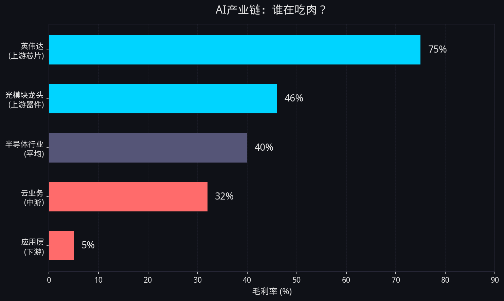
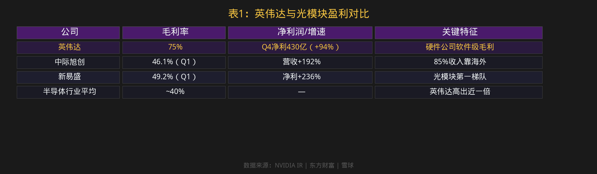
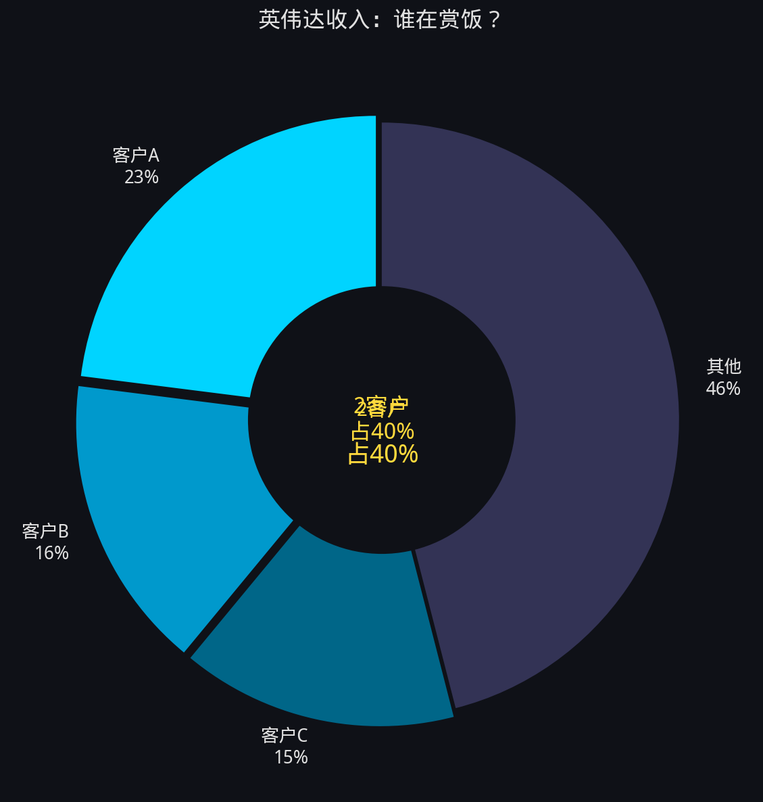
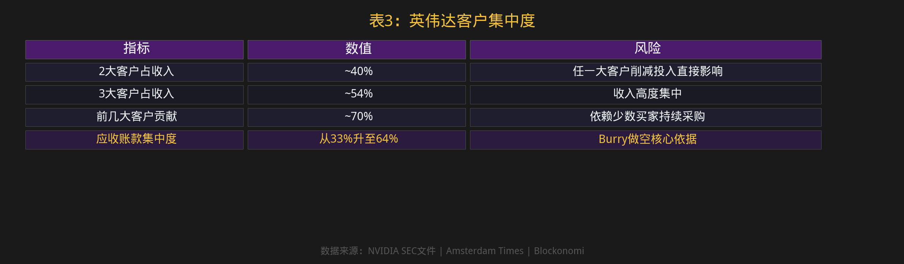
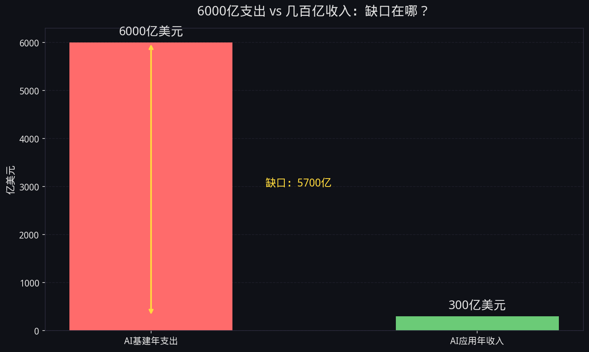
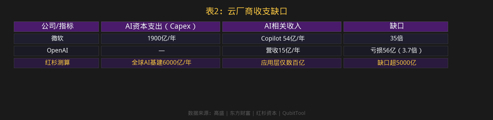
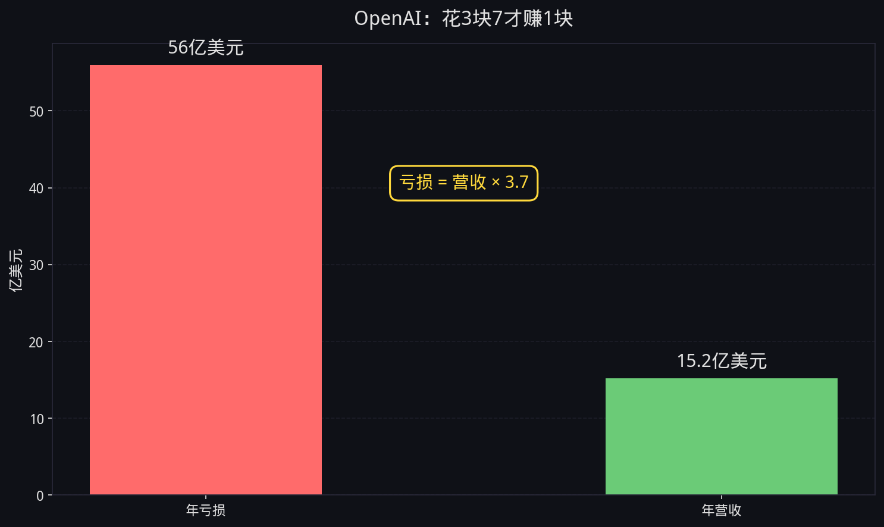
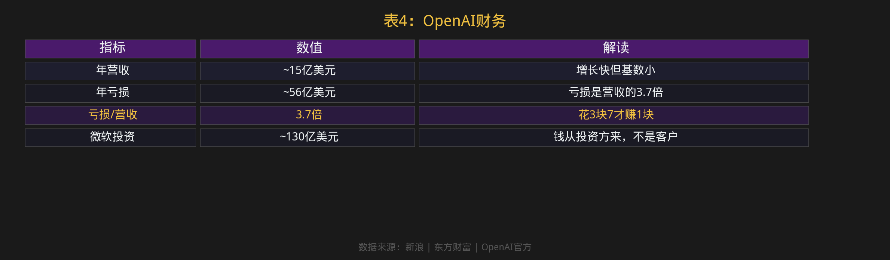
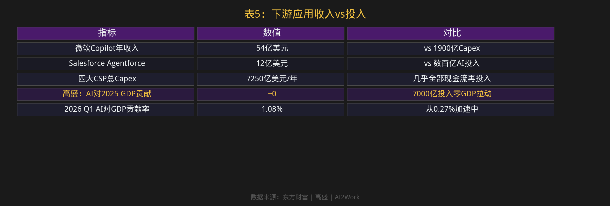
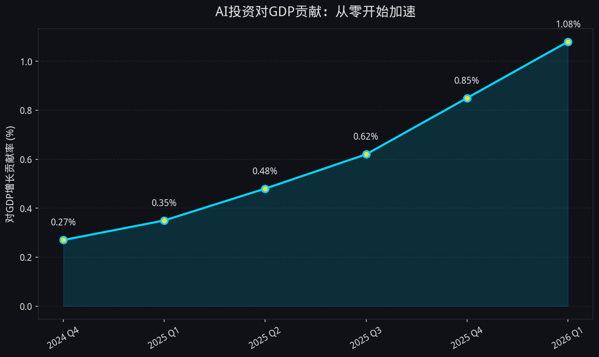

小K·AI行业数据分析 | 2026.06
AI算力 资本支出 英伟达 OpenAI 泡沫
英伟达毛利率75%，OpenAI亏损是营收3.7倍。7250亿资本支出，上游吃肉下游还没上桌。
一、上游吃肉AI产业链的钱，集中在上游。
英伟达一个季度净利润430亿美元，毛利率75%——整个半导体行业平均才40%。这是硬件公司达到了软件级别的毛利，每1美元数据中心收入贡献0.5美元净利润。


A股给英伟达供货的公司也在吃肉。光模块龙头中际旭创毛利率飙到46%，新易盛毛利率49%，净利增速分别+109%和+236%。但85%收入靠海外，本质是吃美国AI红利的供应商，跟英伟达绑在同一条船上。
英伟达FY2026全年营收2159亿美元（+65%），数据中心收入占比超90%。但英伟达有一个风险数据：SEC文件显示，两个客户占了近40%收入，三个客户占54%。前几大客户估计贡献约70%。也就是说，75%的超高毛利极度依赖少数大客户继续买。任何一个大客户削减投入，英伟达的收入就会直接掉几个点。


二、中游烧钱7250亿资本支出，绝大部分是云厂商花的。


四大CSP（亚马逊、微软、谷歌、Meta）2026年AI资本支出合计约7250亿美元，同比增77%。但收入端呢？


7250亿不是当年全花完——GPU折旧3-6年，基础设施10-30年，是多年摊销。高盛预计2026年四大CSP的Capex/经营现金流比例将升至约100%，即几乎全部内部现金流重新投入AI基础设施。
但有个细节值得注意：微软和谷歌都把服务器折旧年限从4年延长到了6年。折旧拉长，每年利润表上的折旧就少了，利润就高了。Michael Burry指控五家云厂商通过这种方式低估了约1760亿美元折旧。如果成立，"龙头真赚钱"要打折扣。
三、下游还没上桌应用层是整条产业链最薄弱的环节。
MIT 2025年的调查：95%的生成式AI试点项目没有可衡量的P&L影响。不是95%失败了——多数试点连效果怎么测都没设基线，所以自然测不出。但不管原因是什么，投入产出不匹配是事实。

微软Copilot 54亿、Salesforce 12亿——跟7250亿的投入比，这些收入像零头。
高盛算过：7000亿美元AI投资对2025年美国GDP增长贡献基本为零。但2026年一季度，AI投资对GDP拉动贡献率已从0.27%升到了1.08%。在加速。

英伟达（毛利率73-75%）→ 光模块龙头（毛利率42-50%）→ 云厂商（云业务毛利率30-35%）→ 应用层（95%不盈利）
英伟达几乎垄断AI加速器市场（~90%份额），获取全产业链最大利润份额。光模块作为"卖铲人"直接受益，但面临每2-3年一代际的价格下行压力。云厂商AI收入快速增长但仍远不能覆盖Capex。应用层绝大多数企业尚未实现盈利，是红杉"6000亿美元缺口"的核心原因。
微软和谷歌都把服务器折旧年限从4年延长到6年。看起来只是会计调整，实际效果很大：折旧拉长，每年利润表上的折旧费用减少，利润显得更高。
Michael Burry（大空头）指控五家云厂商通过延长折旧年限，低估了约1760亿美元折旧。Buxton Helmsley的法证分析框架指出，在AI资本支出时代，云厂商有强烈动机通过折旧政策来美化利润表——因为AI基础设施的真实经济寿命可能远短于账面折旧年限。
大空头Burry持有约11亿美元做空英伟达和Palantir的头寸。做空逻辑不是折旧，而是客户集中度风险——前3大客户占了英伟达64%的应收账款。一旦需求收缩，大客户一砍单，上游订单就会断崖式下跌。
思科在2000年互联网泡沫时期的客户集中度远低于英伟达，但泡沫破裂后依然从472倍PE跌到15倍。英伟达前几大客户贡献约70%收入，且这些客户之间有循环投资关系（微软投资OpenAI→OpenAI采购微软云→微软买英伟达芯片），一旦任何一个环节收缩，整条链都会受冲击。
| 指标 | 2000年互联网泡沫 | 2025-2026年AI热潮 |
|---|---|---|
| 纳斯达克100 Forward PE | 60.1倍 | 22-25倍 |
| 龙头公司PE | 思科101-472倍 | 英伟达~47-56倍 |
| 盈利公司比例 | 仅14% | >90% |
| 科技投资占GDP | ~4.9% | ~4.9%（已追平） |
| AI/互联网占VC | 35-40% | 61% |
相似之处：都是"通用目的技术"引发叙事狂热、囚徒困境式资本涌入、基础设施过度建设模式重复、循环融资风险。不同之处：估值远低于泡沫顶、龙头公司真赚钱、已有大规模实际应用、监管更成熟。
五、结论7250亿资本支出逐层拆解后，图景很清晰：
AI不是骗局，但下游的估值是泡沫。
泡沫不是今天破，因为囚徒困境让资本不敢停——Zuckerberg和Pichai一致表态："过度投资的风险远小于投资不足的风险"。博弈论解释很清楚：如果对手大举投资而你保守，你就会被淘汰；如果都大举投资，至少保住份额。这意味着即使ROI不确定，资本也会持续涌入。
但破的时候，先死的是讲故事的，活下来的是真干活的。
别听故事，看账本。
免责声明：本内容依据公开信息与财报数据，仅对产业经营层面梳理，不构成任何投资建议。
延伸阅读本文聚焦AI算力投资的利润分布与泡沫风险。如果你想了解AI算力底层的电力成本——ChatGPT一天85万度电，中美两条电力策略谁走得通，请看：《AI的电力账单：谁先搞定电，谁就赢了AI》
关于GPU折旧与债务的时间错配问题，请看：《GPU折旧悬崖：资产比债务先死的金融结构》
参考来源| 数据点 | 来源 |
|---|---|
| NVIDIA FY2026 Q4财报 | NVIDIA IR |
| 高盛AI投资热潮与Capex | 财联社/高盛 |
| 高盛6月最新研报 | 金融界 |
| 英伟达客户集中度 | Amsterdam Times/SEC |
| 中际旭创业绩 | 东方财富 |
| 新易盛业绩 | 雪球 |
| Copilot与Salesforce收入 | 东方财富 |
| OpenAI亏损数据 | 新浪 |
| 红杉6000亿缺口 | QubitTool |
| 折旧年限法证分析 | Buxton Helmsley |
| MIT 95%生成式AI试点 | Leadership in Change |
| 高盛GDP测算 | AI2Work |
| Burry与泡沫对比 | IndMoney |
| AI vs 互联网泡沫 | IntuitionLabs |
| Burry客户集中度风险 | Blockonomi |
| 泡沫信号汇总 | Spectrum AI Lab |
| A股泡沫对比 | 东方财富 |
本内容由 Coze AI 生成，请遵循相关法律法规及《人工智能生成合成内容标识办法》使用与传播。
本内容由 Coze AI 生成
← 返回首页